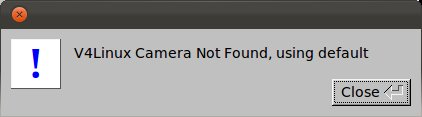
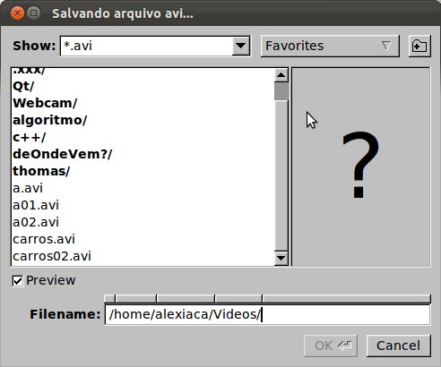
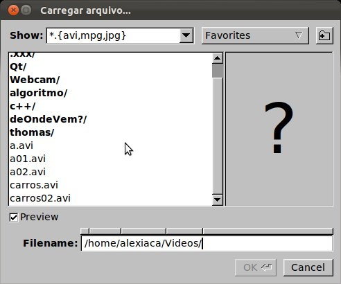
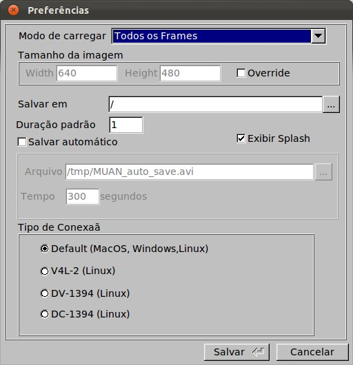

Manual do Usuário
|
|
|
Manual do Usuário |
O MUAN é uma ferramenta de apoio à construção de animações do tipo Quadro-a-Quadro. Através de uma câmera, ele recebe as imagens digitais com as quais a animação será construída. O princípio básico da criação de uma animação com o MUAN inicia-se com a captura de uma imagem pelo usuário. A imagem a ser capturada é mostrada no painel de imagens. Após a captura de um certo número de imagens, o usuário poderá reproduzir sua animação bem como editá-la. Por fim, a animação poderá ser salva no formato AVI e ainda carregada quando o usuário desejar.
Principais comandos
Painel central do MUAN onde são mostradas as imagens. Funciona em dois modos:
Determina se as imagens mostradas no painel de imagens são oriundas da câmera ou da própria animação (memória). Quando no modo "Memória", indica que as imagens mostradas no painel de imagens são oriundas da animação. No modo "Câmera", indica que as imagens mostradas no painel de imagens são provindas da câmera.
Tecla de Atalho: CTRL+/
Importante: Se a câmera não estiver conectada ao computador ou estiver desligada, o aplicativo exibe uma mensagem e entra (ou continua) em modo "Memória".

Captura a imagem corrente recebida pela câmera, inserindo-a na animação na posição seguinte a atual.
Tecla de Atalho: \
Campo de Texto Duração do Frame
No modo Câmera, define a a duração do frame a ser capturado. Como exemplo, uma duração de 2 frames indica que o próximo frame capturado durará o tempo de 2 frames quando da execução da animação.
No modo Memória, define a duração do frame corrente (aquele que esta sendo exibido no painel de imagens). Para tal, basta digitar a duração desejada e teclar ENTER.
Posiciona a animação na posição desejada e exibe no painel de imagens. O usuário deve inserir o número da imagem capturada requisitada e pressionar ENTER.
Importante: Neste caso, se o programa estiver em modo Câmera, automaticamente entrará em modo Memória.
Indica o número (posição) da imagem (captura) corrente.
Saída de Texto Duração Frame Atual
Indica qual a duração do frame corrente.
Indica o número do frame corrente.
Este número é calculado levando-se em conta a duração das capturas anteriores.
Dica: Caso o painel principal esteja no modo "Memória", o frame corrente será exibido no painel de imagens.
Indica o número total de imagens capturadas para a animação.
Indica o número total de frames da animação.
Este número é calculado levando-se em conta a duração de todas as capturas.
Indica o nome e o caminho do arquivo atual (onde está salvo).
Dica: Quando o nome do arquivo está em vermelho significa que o arquivo não está com as últimas atualizações salvas.

Posiciona o frame corrente no primeiro frame da animação.
Tecla de Atalho: HOME
Importante: Esta operação coloca a aplicação em modo "Memória", caso não esteja.
Volta a posição do frame corrente de 1 posição.
Tecla de Atalho: <
Importante: Esta operação coloca a aplicação em modo "Memória", caso não esteja.
Congela (pára) a execução da animação.
Tecla de Atalho: PAUSE
Importante: Para que este fato seja observado, a seleção Memória deve estar ativa em Seleção "Memória/Câmera" e a animação tem que estar sendo tocada. Caso contrário, o clique neste botão não terá sentido, então nada acontece.
Executa a animação.
Tecla de Atalho: CTRL+ENTER
Importante: Esta operação coloca a aplicação em modo "Memória", caso não esteja.
Incrementa a posição do frame corrente de 1 posição.
Tecla de Atalho: >
Importante: Esta operação coloca a aplicação em modo "Memória", caso não esteja.
Posiciona o frame corrente no último frame da animação.
Tecla de Atalho: END
Importante: Esta operação coloca a aplicação em modo "Memória", caso não esteja.
Habilita a opção de execução de apenas um trecho da animação. O início e o fim do trecho devem ser especificados no campo Início e Fim, respectivamente.
Tecla de Atalho: CTRL+R
Determina a posição de início de execução de uma animação. Caso esteja em branco, a animação será executada a partir do primeiro frame.
Dica: No modo "Memória", utilize o Botão Início para definir o início do trecho como sendo o frame atual.
Determina a posição final da execução de uma animação. Caso esteja em branco, a animação será executada até o último frame.
Dica: No modo "Memória", utilize o Botão Fim para definir o fim do trecho como sendo o frame atual.
Liga/Desliga a opção de execução contínua da animação. Quando ligado, toca a animação sempre recomecando do início, quando chega ao final.
Tecla de Atalho: CTRL+L
Copia uma imagem ou um trecho quando definido para a memória.

Cola uma imagem ou um trecho que está na memória.

Cola um trecho de tŕas para frente.

Liga/Desliga a operacao de "Flip", a qual alterna a exibicao da última imagem da animação e da imagem que esta sendo recebida pela câmera. É possível controlar a velocidade do flip através do slider.
Tecla de Atalho: CTRL+F
Importante: Caso o programa esteja executando uma animação, ela automaticamente pára quando o flip é ligado.
Liga/Desliga a operação de Transparência, a qual aplica uma transparência e sobrepõem a última imagem da animação com a imagem que está sendo recebida pela câmera. É possível controlar a porcentagem da transparência através do slider.
Importante: Caso o programa esteja executando uma animação, ela automaticamente para quando a transparência é ligada.
Controla a porcentagem da transparência.
Coloca o aplicativo no modo tela cheia, ou seja, toda a tela do monitor fica preenchida apenas com o painel de imagens. Para voltar ao modo normal da tela, utilize a tecla ESC.
Tecla de Atalho: ALT+ENTER
Quando em modo "Memória", remove o frame corrente, se confirmada a operação. Uma animação sempre tem que ter pelo menos um frame. Assim, ao remover o último frame, automaticamente o Frame de Abertura é inserido na animação e passa a ser o frame corrente.
Tecla de Atalho: DELETE
 |
Importante: Na tela de confirmação, independente do botão que estiver em foco, a tecla ENTER confirma a operação e a tecla ESC, cancela a operação. O botão em foco pode ser acionado, através do teclado, utilizando-se a barra de espaço. |
Salva a animação corrente no formato AVI.
Tecla de Atalho: CTRL+S
|  |
Importante: O MUAN guarda a informação de duração dos frames no arquivo AVI salvo. Assim, esta informação pode ser utilizada na hora de carregar o arquivo. Para maiores detalhes, consulte a seção "Preferências - Modo de Carregar". |
Salva a animação corrente com um novo nome no formato AVI.
Tecla de Atalho: SHIFT+CTRL+S
|
Importante: O MUAN guarda a informação de duração dos frames no arquivo AVI salvo. Assim, esta informação pode ser utilizada na hora de carregar o arquivo. Para maiores detalhes, consulte a seção "Preferências - Modo de Carregar". |

Abre no browser um formulário para que o usuário possa relatar problemas com o MUAN.
Shortcut: CTRL+S
Aplica filtros na imagem capturada pela camera em tempo real.
Permite selecionar o filtro a ser aplicado na imagem capturada pela camera em tempo real.
Aplica filtros nos frames que estão na memória.
Permite selecionar o filtro a ser aplicado nos frames que estão na memória
Cria uma nova animação em branco, fechando qualquer animação em uso, caso esteja sendo usada.
Tecla de Atalho: CTRL+N
Dica: Antes de fechar a animação atual, o programa solicita a operação Salvar caso o arquivo esteja desatualizado.

Carrega uma animação previamente salva ou imagem do tipo RAS.
Tecla de Atalho: CTRL+G
|  |
Importante: Fecha o arquivo atual para abrir o novo solicitado.
Insere um arquivo previamente salvo (animação ou imagem do tipo RAS) na animação atual.
Tecla de Atalho: CTRL+I
Importante: A animação ou imagem será inserida na posição do frame corrente.

Exporta a animação corrente para um novo formato. Extensões disponíveis:
Tecla de Atalho: CTRL+E
Importante: Na tela de exportação, dê o nome do arquivo com a extensão (formato) desejado. Por exemplo: teste.mpg para que o arquivo seja salvo no formato mpeg1.

Insere na animação atual todos os arquivos jpeg de um diretório seguindo a ordem alfabética dos nomes dos arquivos.
Tecla de Atalho: CTRL+M

Exibe a tela Sobre contendo informações sobre o desenvolvimento do MUAN.

Exibe este manual do usuário.
Tecla de Atalho: F1

Exibe a tela de preferências onde são configurados os parâmetros do sistema.
|  |  |
Sai do sistema.
Se a animação corrente não estiver salva, permite que esta operação seja executada neste momento.
Tecla de Atalho: ESC
 |
Não: Sai do aplicativo sem salvar. |
| Coordenação |
Desenvolvimento |
Parceria Tecnológica |